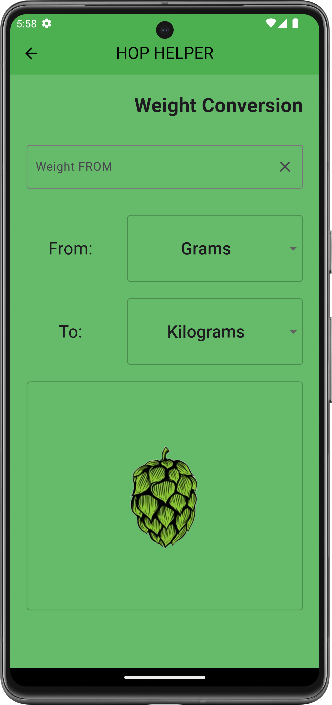

Weight Converter
Tool Overview
The Weight Converter is an essential tool for brewers who need to convert different weight measurements accurately, ensuring consistency throughout the brewing process. From grain to hops, knowing the exact weight in the desired unit is vital for achieving the correct balance of ingredients. HopHelper's Weight Converter allows you to easily switch between different weight units, providing a seamless experience for any brewing scenario.
Benefits of using the Weight Converter include:
- Comprehensive Unit Coverage: Convert between metric and imperial units such as grams, kilograms, ounces, and pounds, ensuring you always have the correct weight for your brewing needs.
- Precision in Ingredient Measurement: Get precise conversions for different ingredient weights, which helps in avoiding miscalculations that could affect your brew's quality.
- Adaptability Across Brewing Setups: Easily convert measurements to suit different brewing environments, whether you're brewing at home, in a craft brewery, or at a larger production facility.

Key Elements on the Screen
- Initial Weight Field: A text field where you enter the initial weight value that you want to convert. This could be in any unit such as grams, kilograms, ounces, or pounds.
- Unit Selection Dropdowns: Two dropdown menus allow you to select the unit of measurement for conversion:
- From Unit: Select the unit that you want to convert from (e.g., grams, ounces).
- To Unit: Select the unit that you want to convert to (e.g., pounds, kilograms).
- Results Display: After entering the weight value and selecting the units, HopHelper will display the converted value, allowing you to understand the equivalent weight in the target unit.
How to Use
To use the Weight Converter effectively, follow these steps:
- Step 1: Enter Initial Weight: Enter the weight value you want to convert in the Initial Weight Field.
- Step 2: Select Units: Use the From Unit dropdown to select the current unit of the weight and the To Unit dropdown to select the desired unit of conversion.
- Step 3: View Results: HopHelper will automatically calculate and display the converted weight in the Results Display area.
Additional Information
- Standard and Metric Units: The Weight Converter includes both metric and imperial units, allowing you to easily switch between units like grams, kilograms, ounces, and pounds. This flexibility is particularly useful for brewers who source ingredients from various suppliers or need to adapt to different regional measurement systems.
- Importance of Accurate Weight Measurement: Accurate weight measurements are crucial in brewing, especially when it comes to ingredients like hops, grains, and adjuncts. Using the correct weight helps achieve the desired flavor profile, bitterness, and consistency in every batch. The Weight Converter ensures that your measurements are precise, reducing the risk of errors that can arise from incorrect conversions.
- Adaptability Across Brewing Environments: Whether you are a homebrewer or working in a larger brewing facility, precise weight measurements are essential for ingredient management and consistency. The Weight Converter provides a quick and reliable way to get accurate measurements, allowing you to focus more on brewing and less on conversions.